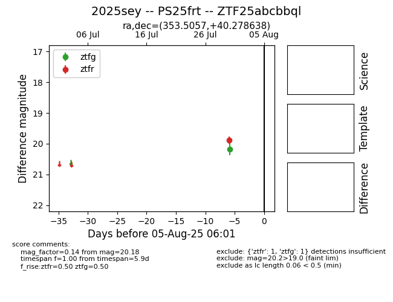

Target 2025sey at 2025-08-05 06:01, see:
FINK: fink-portal.org/2025sey
Lasair: lasair-ztf.lsst.ac.uk/objects/2025sey
ALeRCE: alerce.online/object/2025sey
TNS: wis-tns.org/object/2025sey
YSE: ziggy.ucolick.org/yse/transient_detail/2025sey
alt names
ZTF25abcbbql (ztf,fink)
2025sey (tns,yse)
PS25frt (panstarrs)
coordinates:
equatorial (ra, dec) = (353.5057,+40.27864)
galactic (l, b) = (107.3002,-20.23156)
photometry
last ztfg=20.18, ztfr=19.88
1 ztfg, 1 ztfr detections
